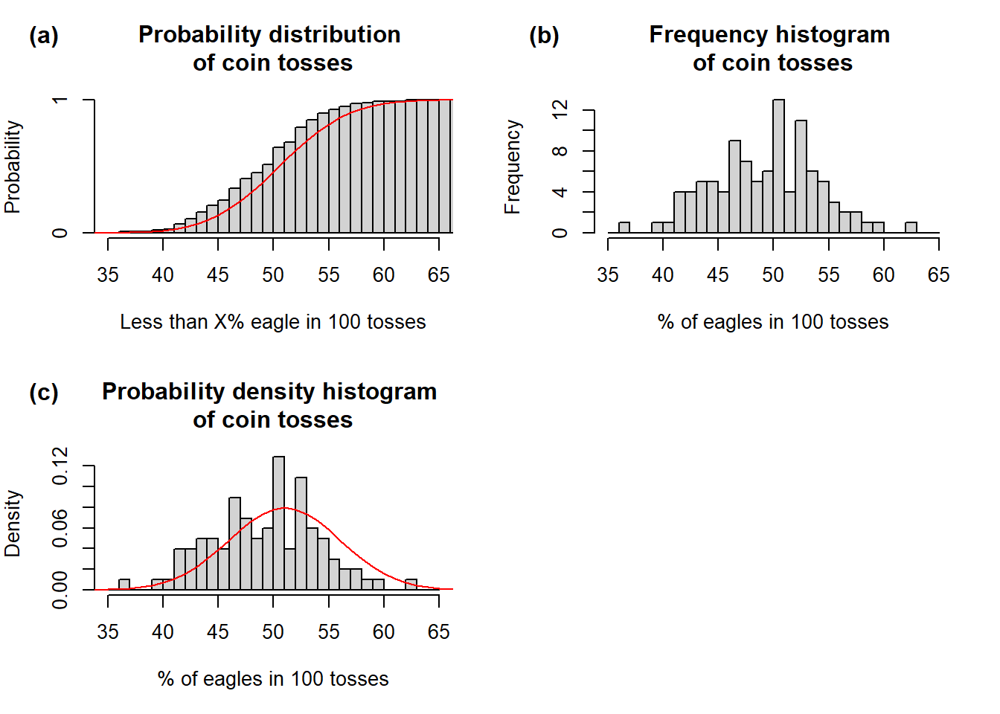

set.seed(42)
# First, we need a randomly generated sample from binomial distribution
# n = number of trials when eagle comes up (out of 100)
# size = number of observations (each observation = 100 tosses)
# prob = probability of eagle coming up in each toss
coin.r <- rbinom(n = 0:100, size = 100, prob = 0.5)
# Second, we need density function to plot theoretical probabilities on the plot
coin.d <- dbinom(0:100, size = 100, prob = 0.5)
# Third, we also need distribution function
coin.p <- pbinom(0:100, size = 100, prob = 0.5)
# This is needed for plotting cummulative histogram
h <- hist(coin.r, breaks = c(0:100), plot = F)
h$counts <- cumsum(h$counts)/sum(h$counts)
# Plots
par(mfrow = c(2,2), mar = c(5, 4, 4, 2))
plot(h,
xlim = range(35, 65),
freq = T,
main = 'Probability distribution \nof coin tosses',
ylab = 'Probability',
xlab = 'Less than X% eagle in 100 tosses')
lines(coin.p, col = 'red')
mtext("(a)", side = 3, adj = -0.2, line = 2, font = 2)
hist(coin.r, breaks = c(35:65),
xlab = '% of eagles in 100 tosses',
main = 'Frequency histogram \nof coin tosses')
mtext("(b)", side = 3, adj = -0.2, line = 2, font = 2)
hist(coin.r, breaks = c(35:65),
freq = F,
xlab = '% of eagles in 100 tosses',
ylab = 'Density',
main = 'Probability density histogram \nof coin tosses')
lines(coin.d, col = "red", lwd = 1)
mtext("(c)", side = 3, adj = -0.2, line = 2, font = 2)
par(mfrow = c(1,1))